| 0 |
BernoulliNBC |
Naive Bayes classifier for multivariate Bernoulli models |
6.570717 |
2.751148 |
226 |
167 |
118 |
39 |
0.852830 |
0.585965 |
0.656977 |
0.714545 |
0.285455 |
0.742200 |
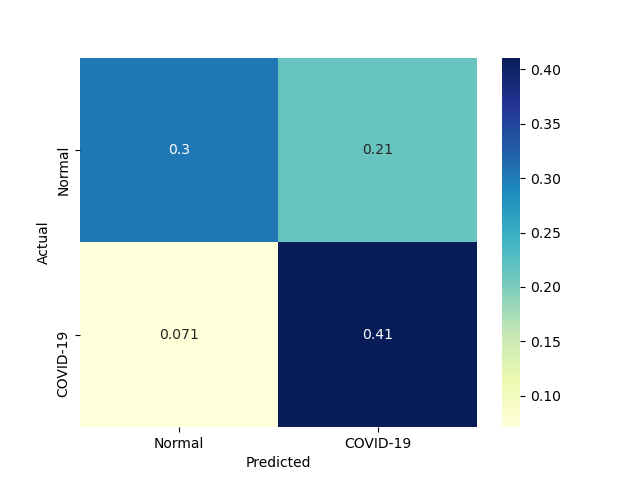 |
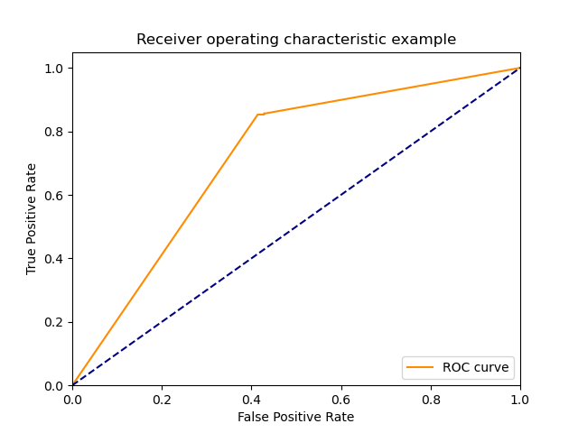 |
| 1 |
ComplementNBC |
The Complement Naive Bayes classifier described in Rennie et al |
4.844363 |
1.477513 |
190 |
192 |
93 |
75 |
0.716981 |
0.673684 |
0.671378 |
0.694545 |
0.305455 |
0.693431 |
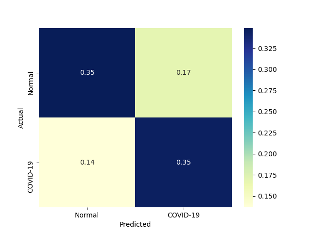 |
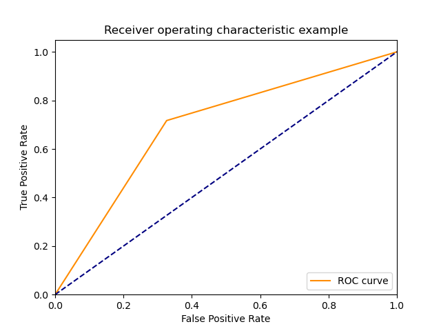 |
| 2 |
GaussianNBC |
Gaussian Naive Bayes (GaussianNB) |
9.401089 |
10.515112 |
214 |
224 |
61 |
51 |
0.807547 |
0.785965 |
0.778182 |
0.796364 |
0.203636 |
0.792593 |
|
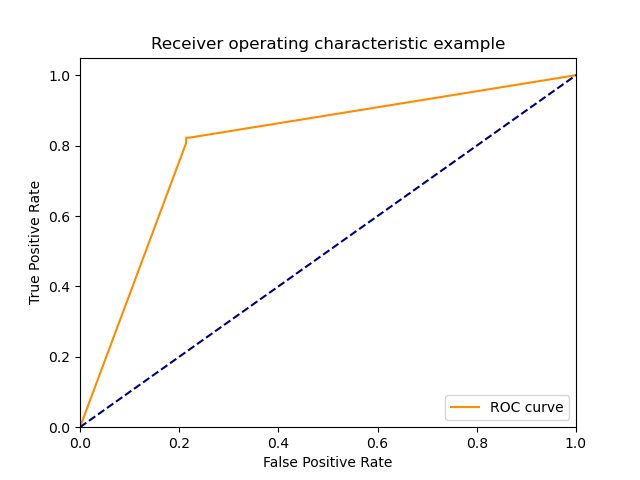 |
| 3 |
MultinomialNBC |
Naive Bayes classifier for multinomial models |
5.881502 |
1.615433 |
190 |
192 |
93 |
75 |
0.716981 |
0.673684 |
0.671378 |
0.694545 |
0.305455 |
0.693431 |
 |
 |
| 4 |
KNeighborsClassifier |
Classifier implementing the k-nearest neighbors vote. |
0.000750 |
24.782750 |
244 |
228 |
57 |
21 |
0.920755 |
0.800000 |
0.810631 |
0.858182 |
0.141818 |
0.862191 |
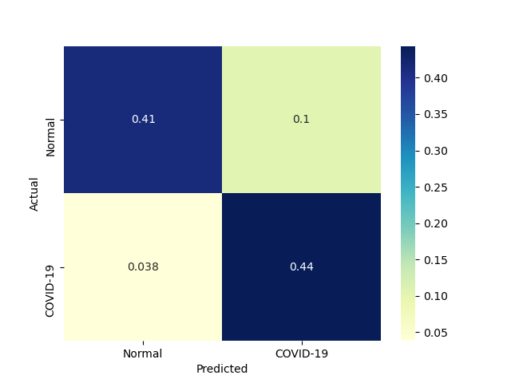 |
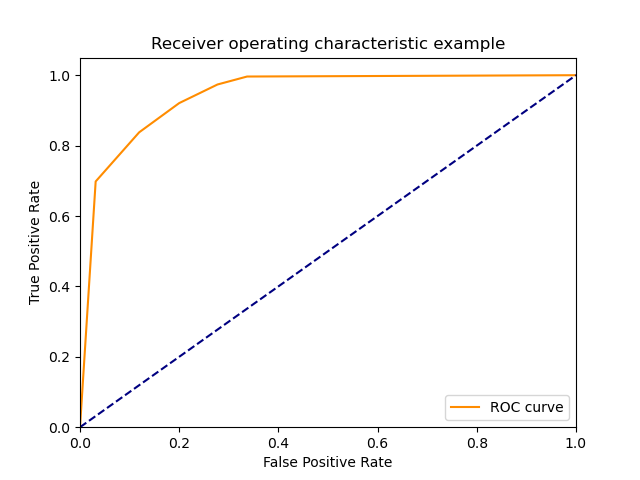 |
| 5 |
LinearSVM |
Linear Support Vector Classification |
978.588372 |
1.664188 |
242 |
228 |
57 |
23 |
0.913208 |
0.800000 |
0.809365 |
0.854545 |
0.145455 |
0.858156 |
|
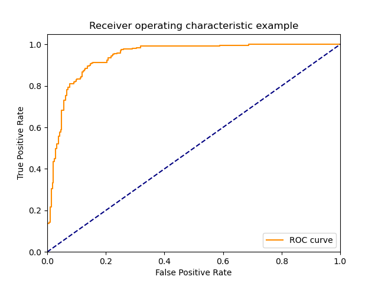 |
| 6 |
NonLinearSVM |
Non Linear Support Vector Classification |
202.280203 |
1159.187032 |
248 |
256 |
29 |
17 |
0.935849 |
0.898246 |
0.895307 |
0.916364 |
0.083636 |
0.915129 |
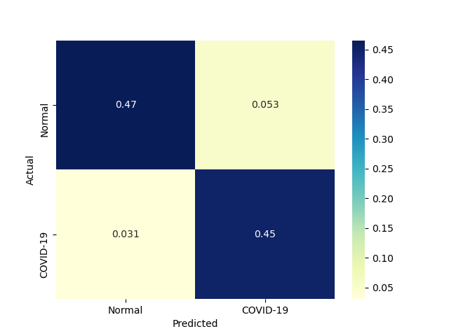 |
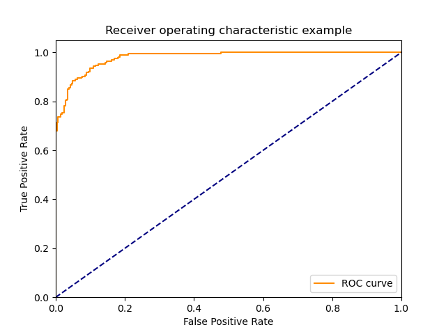 |
| 7 |
AdaBoostClassifier |
An AdaBoost classifier |
1976.557091 |
42.211915 |
244 |
272 |
13 |
21 |
0.920755 |
0.954386 |
0.949416 |
0.938182 |
0.061818 |
0.934866 |
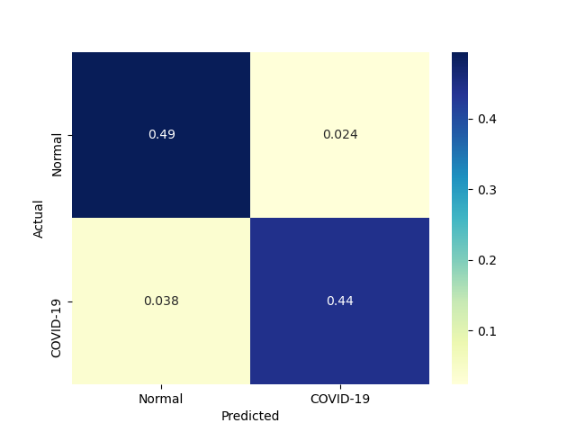 |
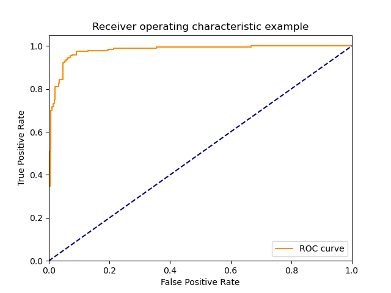 |
| 8 |
GradientBoostingClassifier |
An GradientBoost classifier |
11673.924108 |
1.340723 |
249 |
266 |
19 |
16 |
0.939623 |
0.933333 |
0.929104 |
0.936364 |
0.063636 |
0.934334 |
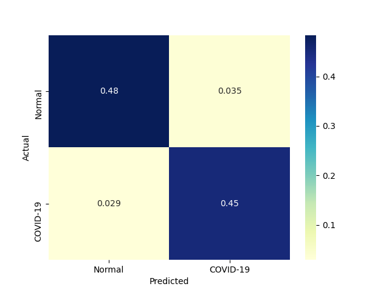 |
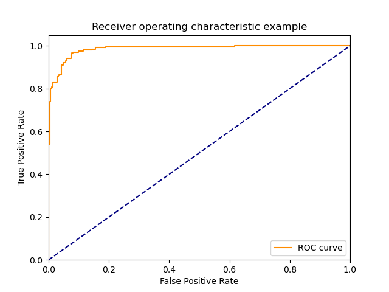 |
{kind=link}
{kind=link}
{kind=link}
{kind=link}
{kind=link}
{kind=link}
{kind=link}
{kind=link}
{kind=link}
{kind=link}
{kind=link}
{kind=link}
{kind=link}
{kind=link}
{kind=link}
{kind=link}